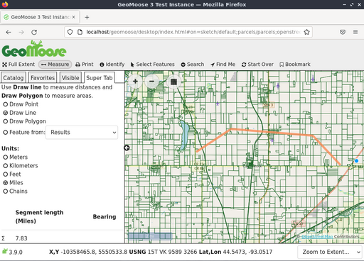
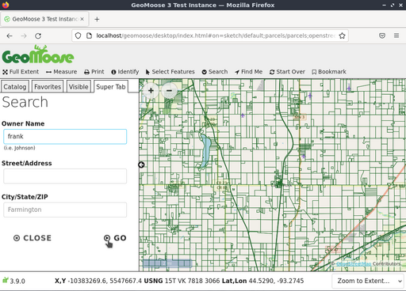
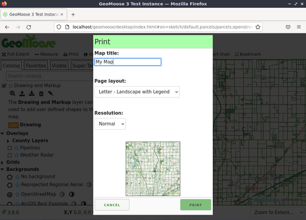

GeoMoose gyorstalpaló¶
A GeoMoose egy böngésző alapú térképes keretrendszer megosztott kartográfiai adatok megjelenítéséhez. Különösen hasznos a térbeli és nem térbeli adatok kezelésére egy országon, városon vagy önkormányzati irodán belül (ahonnan a GEoMoose származik).
A GeoMoose egy GIS adatportál kezelő keretrendszer. A Live DVD-re telepített változat egy minta konfiguráció mely egy több rétegből álló példa.
Contents
Start GeoMoose¶
Menjen a „Browser Clients” mappába az asztalon.
Kattintson a „Start GeoMoose” ikonra. Ez elindítja az alapértelmezett böngészőt, mely a megfelelő helyre navigál automatikusan.
A GeoMoose példány demó interfésze jelenik meg egy honlapon.

A fent látható interfész a következőket tartalmazza:
- Egy banner sor
- Egy eszközsor
- A map window with navigation and zoom controls
- Egy oldal menü a következőkkel:
- Egy „Jump to” helyek legördülő listája
- „Catalog”-gal kezdődő vezérlő fülek, a réteglista megjelenítéséhez. Szükség szerint további fülek jelennek meg: egy „Information”, egy „Custom” fül és továbbiak.
- Egy lábléc sáv ezekkel:
- Több koordináta mező ezekhez: X.Y (helyi koordináták), hosszúság/szélesség (decimális)és Egyesült Államok Nemzeti Rács (USNG)
- Egy szerkeszthető legördülő lista, melyből a megjelenítés méretarányát választhatja ki vagy beírhatja.
Identify a location¶
- Click on the „identify” („i” in a circle icon) button in the top toolbar
- Click a point on the map.

A katalógus a térkép nézet bal oldalán „Super Tab”-bá változik - egy hely, ahol a GeoMoose egy művelet eredményeit megjeleníti meg vagy további adatokat kér. Ebben az esetben a lekérdezés eredményét jeleníti meg az össz aktív és lekérdezhető rétegen arra a pontra ahová térképen kattintott.
Use the measuring tool¶
The GeoMoose measure tool allows you to: * measure a point (return the coordinates of a picked point) * measure the distance along a potentially multi-segment line * measure the area of a polygon.
- Click the double ended arrow icon in the top toolbar to start the measuring tool.
- Choose to measure a point, line, or polygon.
- Click on the map where you want to measure. To measure a point, just click the point on the map you want to measure. To measure a line or polygon click on the map for each vertex a of the line/polygon.
- Double click to end the line/polygon.


Megjegyzés
you can also measure a pre-existing feature on the map (if it is from a vector layer, including previous query results) without having to manually trace over it.
Select features¶
Elemeket szelektálhat ponttal, vonallal, zárt idommal vagy egy létező elemmel. A kezdéshez kattintson a „Select Features” ikonra (egér kurzor ikon) válassza a pontot, vonalat, zárt idomot és kezdje el a térképen a szelekcióhoz a rajzolást. A rajzolás befejezéséhez az utolsó pontba duplán kattintson. Ha szeretné, akkor módosíthatja a kiválasztást a „Modify Feature” beállítással.
Lehetősége van a szelekciót a rajzolt elem környezete alapján, Az alapértelmezett környezet „0”, ami nem változtat semmit. Pozitív érték megnöveli a rajzolt elemet ezzel a távolsággal, negatív érték csökkenti a rajzolt elem méretét.
Válassza ki melyik rétegről szeretne szelektálni a „Query Layer” legördülő listából. Megjegyzés: nem minden réteg használható az elem kiválasztás eszközzel. Ahhoz, hogy szelektálható legyen a rétegnek vektor rétegnek kell lennie és a konfigurációban kiválaszthatóvá kell tenni.

Végül kattintson a „Go” gombra az elemek kiválasztásához. A GeoMoose Egy összesítést ad a szelektált elemekről a Super fülön, emellett kiemeli az elemeket a térképen és a kiválasztott elemek attribútumait megjeleníti.

Ha az egeret a táblázat egy sorára húzza a megfelelő elem kiemelve jelenik meg a térképen. A tölcsér ikont táblázat fejlécében az eredmény további szűrésre használhatja, a háromszög ikont a fejlécben az eredmények rendezésére használhatja. Az eredményeket CSV fájlként letöltheti a táblázat bal felső sarkában található letöltés ikonnal.
Search for features¶
Attribútumok alapján is kereshet az elemekre. A kezdéshez menjen a „Search” menüre az eszközsorban és aztán kattintson a „Search Parcels” ikonra. Írja be a keresési feltételeket a Super fülön és kattintson a „Go” gombra.

A következő képernyőkép egy keresést mutat minden olyan telekre, melynek tulajdonosának neve tartalmazza a „frank” részt.

Három eredmény jelenik meg a listában és kiemelve jelennek meg a térképen.

A nagyító ikonra vagy a telek azonosítóra kattintva ránagyít az adott elemre, ahogy a következő képernyőképen bemutatjuk.

Print the map¶
A következő képernyőkép mutatja be, hogyan néz ki a Print eszköz a GeoMoose demóban. Amikor a Print eszközre kattint, egy párbeszédablak jelenik meg, melyben a nyomtatott térkép címét, a papírméretet és orientációt, a nyomtatás felbontását és a nyomtatandó részletről egy előnézetet láthat.

A párbeszédablakban a Print gombra kattintva Egy PDF dokumentumot generál amit megnyithat vagy elmenthet.

What next?¶
Egy csak az első lépés az úton a GeoMoose használatában. Sokkal több funkciója van amit kipróbálhat.
GeoMoose projekt honlap
GeoMoose oktatóanyag